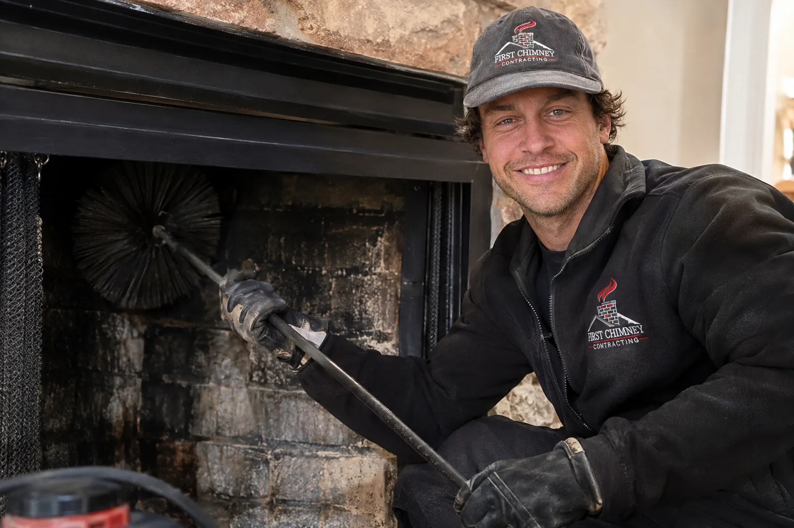
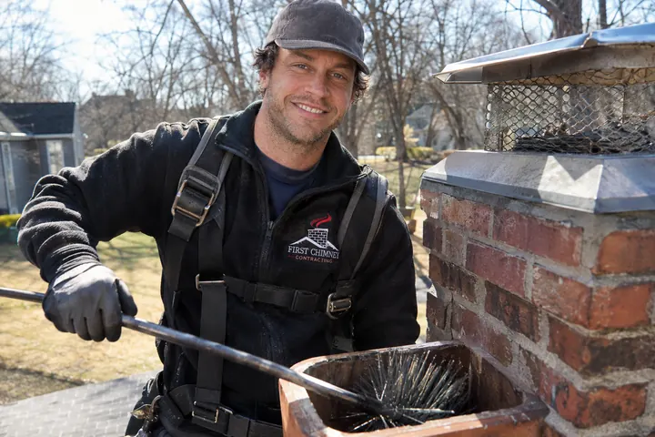

Team Handbook
How we work at First Chimney.
For every technician, helper, mason, sales rep, canvasser and office teammate. Read it in your first week and keep it in the truck.
Welcome
Welcome to the crew.
You joined a company built on one idea: treat every home like it is your own, and tell people the truth about their chimney.
Your first week
- Day 1: safety sheet signed, truck walk-through, shadow Andrew
- Day 2–3: set up and protect work areas, take the 12-photo set
- Day 4–5: read chapters 1, 6 and 8 of this handbook; ask questions
- Install the CRM app and learn to log photos and notes
How you will be measured
- Reliability: on time, prepared, does what you said
- Safety: zero shortcuts
- Customer respect: clean, polite, honest
- Quality: no callbacks
- Growth: learning something new every week
Safety rules (sign below)
- Ladders at a 4:1 angle, 3 feet above the roof edge, secured. Inspect before every use.
- Fall protection on steep, wet or high roofs, and wherever the work is 6 feet or more above a lower level.
- No roof work in ice, high wind, lightning or heavy rain.
- Respirator and eye protection when sweeping or handling soot and creosote.
- Confirm a fireplace or stove is cold before working. Shut off and verify gas before touching a gas appliance.
- Report every injury, near miss and property damage the same day. No blame for reporting.
- Never drive tired or distracted. Phones down while driving.
Name: ______________________________ Signature: ______________________________ Date: ____________
Chapter 01
The First Chimney standard
Big companies win on volume. First Chimney wins on trust. These five promises are the whole strategy.
- The owner answers. Homeowners talk to Andrew, not a call center.
- We show what we see. Photos of every finding, explained in plain English.
- Quote first, always. Nothing is done without written approval.
- Leave it cleaner. Drop cloths down before any tool comes out.
- Honest, even when it costs us. If it does not need fixing, we say so.
Speed to the call, proof on the roof, and a reminder every year. That is the business.
Credentials you can point to
F.I.R.E. Certified Technician. Andrew is listed by name in the official F.I.R.E. Service directory (f-i-r-e-service.com, Virginia certified technicians). When a homeowner or realtor asks, send them the link. Verifiable beats impressive.
10 years in the chimney trade, 25 years combined crew experience. Say it the same way every time, everywhere.
Never do: invent reviews, borrow reviews from another company, offer anything in exchange for a review, scare people into repairs, or claim a certification you do not hold. One shortcut can undo a year of trust.
Chapter 05
Sales: phone, follow-up, estimates
You are not "selling chimneys". You are helping a family use their fireplace safely. Act like it and the sales take care of themselves.
Inbound call script
Answer: "First Chimney, this is Andrew."
Listen: "What's going on with the chimney?" (Let them talk. Take notes in the app.)
Qualify: "What do you burn, and how often?" · "When was it last cleaned or inspected?" · "Noticed anything: smoke, smell, water, debris?" · "What's the address?"
Recommend: "The best place to start is a cleaning and inspection. That way I can tell you exactly what's going on, with photos."
Book: "I have Tuesday morning or Thursday afternoon. Which works better?"
Set expectations: "I'll text you a confirmation. Please don't burn for 24 hours before so it's cool."
Calling back a website lead
"Hi, is this Sarah? This is Andrew Paterini with First Chimney. You filled out a request on our website a few minutes ago about your chimney. Is now a good time for two minutes?"
Then use the qualify questions. If they took the health check, say what they told you: "I see you mentioned some black flakes in the firebox. That's usually creosote, so let's get it cleaned and looked at."
Objections, answered honestly
| They say | You say |
|---|
| "How much for a repair?" | "I'd be guessing without seeing it, and I don't want to quote you wrong. The inspection tells us exactly what it needs, and you get photos either way." |
| "Another company quoted less." | "Could be the right call. Can I see what they quoted? I'll tell you honestly if it covers the same work. If it does, go with them." |
| "I just want a cleaning." | "Absolutely. I look the whole system over while I'm there anyway, so you'll know if anything else needs attention. No pressure to fix anything." |
| "I need to think about it." | "Of course. The photos and estimate are in your email. Anything I can clear up now? I'll check in Thursday." |
| "Is it really necessary?" | Show the photo. Sort it: safety now, this year, can wait. Let them decide. Honesty here is the best sales tool you have. |
| "Somebody called offering a $49 cleaning." | "Be careful with those. Many make it up with scare tactics on the roof. Whatever you decide, ask for photos and a written quote before any repair." |
The estimate presentation
- Sit down with them. Phone in hand, photos up.
- Good news first. "Your firebox and damper are in good shape."
- Each issue in one sentence: what it is, why it matters, what happens if it waits.
- Sort into three groups: Safety now · This year · Monitor.
- Offer options: repair-only and full fix. People like choosing.
- Ask: "Which option feels right to you?" Then stop talking.
- Yes? Take the deposit (masonry and liners) and book it. Not yet? Move the card to Estimate Sent. The system follows up.
Chapter 06
On-site inspection guide
For Andrew as a refresher, and for every new technician on day one. Consistency is what makes a report trustworthy.
Before you knock
- Read the CRM note: health check answers, what they noticed, fireplace type.
- Park so you don't block the driveway. Truck clean.
- Drop cloths, vacuum, camera, ladder, PPE, flashlight, moisture meter ready.
At the door
- Introduce yourself by name. Confirm what they asked for.
- Ask about pets, kids and anything they want you to look at.
- Ask when the fireplace was last used (must be cool).
Safety (non-negotiable)
- Ladder at a 4:1 angle, 3 feet above the roof edge, tied off.
- Fall protection on steep or wet roofs. No roof work in ice, high wind or lightning.
- Respirator and eye protection for soot and creosote.
- Gas appliances: shut off and verify before working on them.

Level 1 inspection checklist
Exterior and roof
- Crown: cracks, overhang, drip edge
- Cap and spark arrestor: present, rusted, mesh intact
- Flashing: lifted, rusted, sealed
- Brick and mortar: spalling, open joints, efflorescence
- Height and clearance from roof and nearby structures
- Chase cover (prefab): rust, standing water
Interior
- Firebox: cracked brick, gaps in joints
- Damper: opens, closes, seals
- Smoke chamber: rough or unparged, creosote
- Flue: buildup, tile cracks, gaps (camera)
- Hearth extension and clearances to combustibles
- Smoke and CO alarms present and working
Recommend a Level 2 (camera through the whole flue) when: the home is being sold, there was a chimney fire or storm or earthquake event, the appliance or fuel is changing, or a Level 1 finds something you can't fully see.
The standard photo set (every job)
1 House front2 Chimney, full3 Crown4 Cap5 Flashing6 Masonry close-up7 Firebox8 Damper9 Smoke chamber10 Flue camera11 Every problem, with scale12 Clean work area after
The 10-minute walkthrough
"Here's what I found. Good news first: [good items]. Now, three things. This one is a safety issue: [photo, one sentence]. This one should be done this year: [photo]. And this one we just keep an eye on: [photo]. I'll put it all in writing with prices. Take your time, nothing happens without your OK."
Before you leave
- Area cleaner than you found it. Show them.
- Upload photos to the opportunity's Job Photos field and type findings in Findings.
- Set Inspection Level and Job Type. Move the card. Ask: "Know anyone else with a fireplace?"
Chapter 07
Partner playbook and scripts
Ten good partners can fill a calendar. These people see chimney problems every week and need someone reliable to call.
| Partner type | Why they need you | What you give them |
|---|
| Realtors (listing and buyer agents) | Chimney surprises kill deals and delay closings | Fast Level 2 inspections, plain-English reports, /realtors page for clients |
| Home inspectors | They flag chimneys but don't inspect inside the flue | A trusted "refer to a specialist" name with credentials they can verify |
| Roofers | Chimney flashing and masonry around their roofs | Masonry and crown work done right, so their roof doesn't leak |
| HVAC, plumbers, hearth dealers | Venting, liners, appliance changes | Relining and inspections when fuel or appliance changes |
| Property managers | Many units, liability, annual checks | Scheduled annual inspections, one invoice, photo reports |
| Insurance agents | Fire and water claims, risk | A credible inspector to recommend |
| Painters, handymen, remodelers | They see stained ceilings and crumbling chimneys | Someone to hand chimney jobs to |
Realtor script (call or drop-in)
"Hi, I'm Andrew Paterini, owner of First Chimney and a F.I.R.E. Certified Technician. I know chimney issues can hold up a closing. When one comes up in your deals, I can usually get out quickly and give you a plain answer with photos. The national standard calls for a Level 2 inspection at every sale, and most home inspectors only look from the outside. Can I send you a link you can forward to clients? It's firstchimneycontracting.com/realtors. Text me anytime with an address and a deadline."
Home inspector script
"I'm Andrew with First Chimney. When your report says 'recommend evaluation by a qualified chimney professional,' I'd love to be that name. I do camera inspections inside the flue, send photos, and I'll copy you on what I find so your report looks good. My certification is listed in the F.I.R.E. directory if your clients ask."
Home improvement contractor script (roofers, remodelers, HVAC)
"You're on roofs and in houses every day. When you see a chimney that needs work, I'd like to be your go-to. I'll stay in my lane, do it right, and send the customer back to you for anything that's yours. Want to swap cards and keep each other in mind?"
Realtor office talk (10 minutes at a sales meeting)
- Who you are, credential, 10 years.
- Three chimney problems that kill deals (flue cracks, leaks, missing liner) with photos.
- What a Level 2 is and why NFPA 211 calls for it at sale.
- How to reach you: text, address, deadline. Hand out cards with the /realtors QR code.
Partner pages and guides (already built)
Each industry has its own page with the 10% partner rate, a call request form and a free 8-page guide: realtors (/realtors), home inspectors (/inspectors), contractors (/contractors), property managers (/landlords) and insurance (/insurance). Print the guides as leave-behinds. Every guide request lands in the CRM's Partners pipeline.
Keep partners warm
- Answer partner calls first. Always.
- Text a thank-you after every referral, and report back on how it went.
- One useful email a month (the CRM sends it). Coffee once a quarter with your top three.
- Track every partner in the Partners pipeline. Move them to Active Partner after the first referral.
Chapter 08
Door knocking and canvassing
The fastest way to fill a slow week, if it's done politely and in the right places.
Where and when
- "Five around" every job: the 5 houses on each side and across the street from a job you're doing today. "We're working at your neighbor's" is the best opener there is.
- Neighborhoods with chimneys: older brick homes, visible chimneys, woodpiles.
- Best season: late August to December (pre-snow), and March to May for leaks and masonry.
- Best hours: weekdays 4 to 7 pm, Saturdays 10 am to 4 pm.
Rules
- Check each town's soliciting rules. Some require a permit. Get it.
- Never knock on "No Soliciting" homes. Leave nothing there either.
- Never put anything in a mailbox (federal law). Use door hangers.
- Wear the company shirt. Carry ID and cards.
What to carry
- Door hangers with the /check QR code and $199 offer
- Business cards and the referral card (NEIGHBOR25)
- Phone with the CRM app open
- Photos on your phone of common problems
The 15-second door script
"Hi, I'm Andrew with First Chimney. We're doing a chimney job for your neighbors at [house], so I'm letting folks on the street know we're here this week. Do you use your fireplace at all? … When was the last time someone looked at it?"
Interested: "I can take a quick look from the ground right now, free, and if it needs anything I'll get you on the schedule while I'm in the area."
Not now: "No problem. Here's a card. There's a free 2-minute chimney check on the back. Have a good one."
Log every door
Interested or booked? Create the contact in the CRM app and add tag Door Knock. The system texts them a thank-you with the health check link and offer. Not home? Leave a hanger. Track three numbers per outing: doors knocked · conversations · appointments. A good day is 1 appointment per 10 conversations.
Hiring canvassers later: pay per conversation logged or per appointment that shows up, never per sale. It keeps them honest and polite. The careers page already lists the Canvasser role.
Chapter 11
Google Business Profile and reviews
For a local service business, the Google profile brings in more calls than the website. Treat it like a second website.
Setup checklist
- Primary category: Chimney sweep. Add: Chimney services, Masonry contractor, Fireplace store (if selling units).
- Service-area business: hide the home address, list main cities in each state.
- Phone (757) 589-0783, website, hours (only once confirmed).
- Add every service with the description from the website.
- Upload 20+ real photos: truck, Andrew, jobs, before and afters.
- Logo and cover photo.
- Business description using the website's About text.
- Ask and answer 5 common questions (pricing, area, $199, Level 2).
- Turn on messaging and connect it to the CRM.
- Copy the review link into the CRM (custom value "Review Link") and the website.
- Then claim Bing Places (import from Google) and Apple Business Connect.
- Submit the sitemap in Google Search Console.
Weekly habits
- One post a week (the Monday before and after works great).
- Five new photos a week.
- Reply to every review within 48 hours.
Reviews: the rules that keep you safe
Do: ask every customer, happy or not (the CRM does this when you mark Job Complete). Make it easy with the link. Thank people.
Never: offer discounts or gifts for reviews, ask only happy customers, write reviews for anyone, or post reviews from another company. Google removes them, and the FTC fines businesses for fake or incentivized reviews.
Reply templates
5 stars: "Thank you, [Name]. It was a pleasure working on your chimney in [Town]. Enjoy the fireplace this winter. Andrew"
Critical: "[Name], thank you for the honest feedback. I'm sorry we fell short on [issue]. I'd like to make it right. Please call me directly at (757) 589-0783. Andrew"
Chapter 16
Templates: texts, emails, voicemails
Most of these already run automatically in the CRM. Use them by hand when you need them.
Missed your call
"Sorry I missed you. This is Andrew with First Chimney, probably on a roof right now. What can I help you with? I'll call back as soon as I'm down."
On my way
"Hi [Name], Andrew from First Chimney. On my way, about 20 minutes out."
Estimate sent
"Hi [Name], your estimate and photos are in your email. Happy to walk through any of it on the phone."
Review request
"Thanks for having me out today. If you were happy with the work, a quick Google review helps a small business like mine more than you know: [link]"
Referral thank-you
"Thank you for sending [Friend] my way. I'll take great care of them, and your $25 credit is on your account for next time."
Voicemail: website lead
"Hi [Name], Andrew Paterini with First Chimney returning your chimney request. I'll text you too, so reply whenever is easy. My number is 757-589-0783."
Voicemail: past customer, yearly
"Hi [Name], Andrew from First Chimney. It's been about a year since I looked at your chimney. I'm booking fall appointments now and wanted to give you first pick. 757-589-0783."
Door knock follow-up
"Great meeting you today, [Name]. Here's the free 2-minute chimney check: firstchimneycontracting.com/check. Text me anytime. Andrew"
Partner thank-you
"Thanks for the referral on [address], [Name]. Inspection's done, the report went to your client, and I copied you. I appreciate you."
Unhappy customer
"[Name], I'm sorry about [issue]. I want to make this right. Can I come back [day] to take care of it at no charge?"